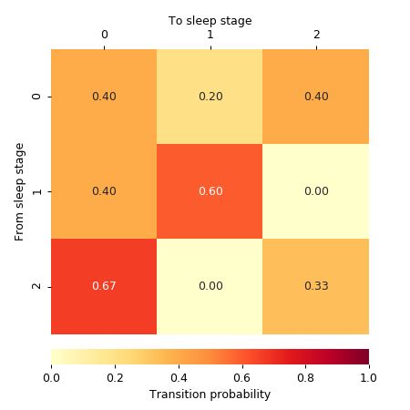

yasa.transition_matrix¶
-
yasa.transition_matrix(hypno)[source]¶ Create a state-transition matrix from an hypnogram.
New in version 0.1.9.
- Parameters
- hypnoarray_like
Hypnogram. The dtype of
hypnomust be integer (e.g. [0, 2, 2, 1, 1, 1, …]). The sampling frequency must be the original one, i.e. 1 value per 30 seconds if the staging was done in 30 seconds epochs. Using an upsampled hypnogram will result in an incorrect transition matrix. For best results, we recommend using an hypnogram cropped to either the time in bed (TIB) or the sleep period time (SPT), without any artefact / unscored epochs.
- Returns
- counts
pandas.DataFrame Counts transition matrix (number of transitions from stage A to stage B). The pre-transition states are the rows and the post-transition states are the columns.
- probs
pandas.DataFrame Conditional probability transition matrix, i.e. given that current state is A, what is the probability that the next state is B.
probsis a right stochastic matrix, i.e. each row sums to 1.
- counts
Examples
>>> import numpy as np >>> from yasa import transition_matrix >>> a = [0, 0, 0, 1, 1, 0, 1, 2, 2, 3, 3, 2, 3, 3, 0, 2, 2, 1, 2, 2, 3, 3] >>> counts, probs = transition_matrix(a) >>> counts 0 1 2 3 Stage 0 2 2 1 0 1 1 1 2 0 2 0 1 3 3 3 1 0 1 3
>>> probs.round(2) 0 1 2 3 Stage 0 0.40 0.40 0.20 0.00 1 0.25 0.25 0.50 0.00 2 0.00 0.14 0.43 0.43 3 0.20 0.00 0.20 0.60
Several metrics of sleep fragmentation can be calculated from the probability matrix. For example, the stability of sleep stages can be calculated by taking the average of the diagonal values (excluding Wake and N1 sleep):
>>> np.diag(probs.loc[2:, 2:]).mean().round(3) 0.514
Finally, we can plot the transition matrix using
seaborn.heatmap()>>> import numpy as np >>> import seaborn as sns >>> import matplotlib.pyplot as plt >>> from yasa import transition_matrix >>> # Calculate probability matrix >>> a = [1, 1, 1, 0, 0, 2, 2, 0, 2, 0, 1, 1, 0, 0] >>> _, probs = transition_matrix(a) >>> # Start the plot >>> grid_kws = {"height_ratios": (.9, .05), "hspace": .1} >>> f, (ax, cbar_ax) = plt.subplots(2, gridspec_kw=grid_kws, ... figsize=(5, 5)) >>> sns.heatmap(probs, ax=ax, square=False, vmin=0, vmax=1, cbar=True, ... cbar_ax=cbar_ax, cmap='YlOrRd', annot=True, fmt='.2f', ... cbar_kws={"orientation": "horizontal", "fraction": 0.1, ... "label": "Transition probability"}) >>> ax.set_xlabel("To sleep stage") >>> ax.xaxis.tick_top() >>> ax.set_ylabel("From sleep stage") >>> ax.xaxis.set_label_position('top')
